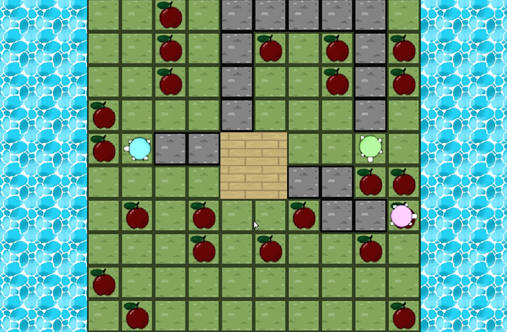

Der Boden ist Java
Erkunde als Schildkröte eine tropische Insel und erhalte Punkte, doch nimm dich von der Kraft der Natur in Acht!
Trailer
EntwicklerInnen:
- Melanie Svab
- Rohail Gondal
- Dennis Grunenberg
- Natasha Dudler
Steuerung:
Pfeiltasten: Nach oben, unten, links und rechts bewegenMaustaste: Zu den Rändern des Spielbrettes fahren, um die Karte zu verschieben
Maustaste: Auf Ränder klicken für Bonuspunkte
Events:
Überschwemmung: Es folgen von zufälligen Seiten aus Überschwemmungen mit unterschiedlicher Stärke und Anzahl.Erdbeben: Es folgen Flächen mit Erdbeben, die teils grössere und teils kleinere, zusammenhängende Bereiche erschüttern. Münzen: Münzen geben Bonuspunkte und können mit einer Wahrscheinlichkeit von 1:10 anstelle von Erdbeben oder Überschwemmungen auftreten.